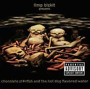
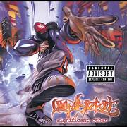

Discografía
Estos son algunos de los álbumes más representativos de esta banda, con enlace directo a YouTube para escuchar el disco completo.
Álbumes Destacados

Three Dollar Bill, Y'all $ (1997)
"El primer album del Limp Bizkit que gracias a la cancion "Fait" le dio una oportunidad de brillar.
Escuchar en YouTube

Chocolate Starfish and The Hot Dog Flavored Water (2000)
el album mas exitoso de Limp Bizkit y el cual los catapultaria a la fama total al cien por ciento con canciones como "Rollin".
Escuchar en YouTube

Significant other (1999)
Disco que los lanzo a la fama mundia y consolido su estilo Nu metal con influencias rap y rock alternativo.
Escuchar en YouTube